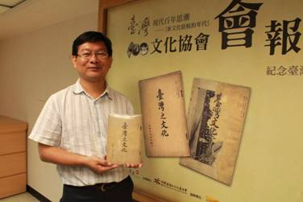

《臺灣之文化》復刻出版緣起及意義
臺灣文化協會創立於大正十年（一九二一），以助長臺灣文化之發達為宗旨，是民族主義文化啟蒙運動的指導團體。
文化協會堪稱臺灣歷史上最重要的結社，先覺者所塑立自由主義的精神，成為反抗強權霸道的基因，從日治時期、二二八事件、戒嚴時期以迄解嚴之後，對臺灣的民主運動、文化運動、社會運動產生全面性深遠的影響。其創立日十月十七日，民國九十年（二００一）被國定為「臺灣文化日」，每年的總統文化獎也擇此日頒獎，都足以證明文化協會在歷史上的地位。民國九十二年（二００三）國立臺灣文學館也以此日作為開館日，表達對新文化運動先驅的崇高敬意。
日治時代，殖民政府視自由主義思想為毒素，以嚴峻的新聞檢查防堵散播。文化協會發行的會報，屢遭刁難。會報編輯暨發行人蔣渭水一生都在捍衛言論自由，曾在臺灣人唯一言論機關《臺灣民報》言：「言論的自由和束縛，是善政與惡政的分歧點。行惡政的必先束縛民眾的言論」，指責「不准民眾的言論機關存立於島內，是惡政中的第一惡政。」
會報第一號發行於大正十年（一九二一）十一月二十八日，至發行最後一號第八號止，都遭到嚴格的思想檢查，令其不能刊載評論時事，論述很不自由，所以自第三號起改以單行本刊行。第四號會報《臺灣之文化》又因「抵觸新聞紙令」，大正十一年（一九二二）七月出版時即被禁止發行，此次復刻出版更是彌足珍貴。
此書復刻出版有一段動人的故事。收藏家蔡滄龍先生在高中時代就熱衷於臺灣文獻史料的收藏，節省午餐費在牯嶺街舊書肆購得《臺灣之文化》。經由文史學家莊永明的引見，黃信彰先生的促成，蔡滄龍先生本著公共文化財不藏私的精神，慷慨贈與蔣渭水文化基金會典藏與出版，其為臺灣文獻史料保存的深情，令人無比感動。
《臺灣之文化》的目次頁仍以「文化叢書」為名，標示其雖被迫改為單行本出版，仍延續第三號《臺灣文化叢書》之文化抵抗一貫精神，以介紹文化思潮，民主學說、社會的改革、新觀念、新思想來啟迪民智，首篇葉清耀的〈民主的正系與旁系及其優劣點〉，第二篇謝文達的〈飛機之和平使命及其對文化之影響〉是《臺灣文化叢書》的連載，顯示臺人對政治思想的傳播、民主制度建立的殷切，以及新文明的熱切追慕。會報也宣揚信仰自由，轉載民國十一年（一九二二）中國知識分子要求教會學校的教育與宗教分離，在文化戰線上的反帝國主義非宗教運動。基於客觀公正與平衡，也刊登基督徒羽鳥光童的駁斥非宗教運動；會報也介紹提倡四海之內皆兄弟，社會平等的光明教〈Bahaism，又名大同教，源於波斯〉，足見會報介紹多元文化與信仰的面貌。
會報鼓勵創作，提倡新文藝，介紹英國維多利亞時代抒情詩人羅伯特·白朗寧(RobertBrowning﹚的詩作；翻譯俄國盲詩人愛羅先珂反殖民色彩濃厚寓言式的小說〈窄籠〉，人有奴性，是甘心被拘於狹籠內的，而欲得自由者必須先掙脫牢籠，被壓迫者需先自我覺醒才能解放自己。愛羅先珂是世界主義者，作品甚得魯迅賞識及翻譯。文化協會會報引介西洋著名小說，借鏡新文學傳播人道主義精神。
愚民教育是束縛思想的利器，會報記載文化協會申辦收容貧兒的文化義塾竟然不被許可，而臺北師範學生被迫集體退會。理事吳海水醫專畢業後，被強迫需退出文化協會才能就職臺南醫院，會員林汝直、施至善則被免去教職。「人之所以有人之價值者，皆由文化而起」，「文化之盛俱由眾力而成」，文化發達妨害殖民統治，總督府可說是用盡威脅利誘的手段來圍堵文化運動。
然而，先覺者展現知識份子的風骨，不畏高壓統治，宣傳民主、自由、人權，爭取言論、思想、學術、講演、結社的自由，政治、經濟、社會平等，推動「臺灣是臺灣人的臺灣」，當家做主的民族自決運動，不但極力保存自己的文化、語言，且提升臺灣文化，創設臺灣特有文化，「人不是人之奴隸和不是偶像的愚弄物」，拒絕被殖民統治者奴化、同化，打造臺灣人成為具有文化素養、民主思想、理性思考、價值判斷的「全人」。文化協會引領的新文化運動，可說是是臺灣人意識覺醒和文化重建的開始。
文化協會發韌地及本部設於蔣渭水懸壺的大安醫院﹙臺北市太平町三丁目二十八番地，今延平北路二段三十一號，義美食品公司發源地，現為延平門市部﹚，該會宣傳媒體《臺灣文化協會會報》、《臺灣》、《臺灣民報》也都以此為發行所。大安醫院儼然是臺灣人的發聲堡壘，非武裝反殖民運動總機關。
民國一００年（二０一一）十月十七日，適逢文化協會創立九十周年暨第十屆臺灣文化日，策劃復刻出版文化協會《會報》，以保存史料最具實質意義的方式來紀念。爰藉此拋磚引玉，期待闕漏的會報能陸續出土，修補臺灣歷史的斷層，以窺先覺者志業之全貌。
《臺灣文化叢書》復刻出版緣起及意義
臺灣文化協會創立於大正十年（一九二一）十月十七日，為日治時期最重要的文化啟蒙團體，非武裝反殖民運動總機關。創會之際即依其會則著手發行會報，由專任理事蔣渭水任發行人及編輯，發行所設於其懸壺之大安醫院﹙臺北市太平町三丁目二十八番地，今延平北路二段三十一號，義美食品公司發源地，現為延平門市部﹚該會報宣傳新文化運動，發行宗旨以助長臺灣文化之發達為目的，對臺灣現代思潮產生重大影響。
依據殖民政府密件《臺灣總督府警察沿革誌》記載會報共發行八號。第一號發行於大正十年十一月二十八日，印製一千三百份，因為刊登蔣渭水的〈臨床講義／關於臺灣這位患者〉及《煩惱的靈魂》、《岡山郡來鴻》等敏感文章，受到禁止發售，改訂之後才准發行新版的處分，且被令自第二號起，原稿須先受治安單位檢閱後才能出版。然因會報依法不能刊載時事，所以自第三號起改以單行本刊行，但是第四號卻仍然被以「抵觸新聞紙令」為由，禁止發行；因而自第五號起，再恢復《會報》的題號繼續刊行。又因時常受到行政處分，論述很不自由，因此自第八號起中止發行，改以《臺灣民報》代為機關報。
會報由於發行迭遭殖民政府刁難，留存不易，至今出土者僅見大正十一年（一九二二）四月發行的第三號《臺灣文化叢書》，以及七月發行的第四號《臺灣之文化》。
蔣渭水文化基金會民國九十五年（二００六）成立以來，致力於臺灣文史的展覽、出版、蒐集、典藏。蔣渭水外曾孫蔣伯欣博士因追尋先人史料，發現《臺灣文化叢書》典藏於中央研究院近史所郭廷以圖書館，而該館也秉持推廣研究與保存歷史文獻之志業，慨然提供高解析度檔案，成為此書復刻出版的一段佳話。
文化協會宣傳媒體，諸如大正九年（一九二０）七月發刊的《臺灣青年》、大正十一年四月發刊的《臺灣》、大正十二年（一九二三）四月發刊的《臺灣民報》坊間均已有復刻版流通，唯有文化協會會報因散佚歷來均未有復刻版本發行，致使學界難窺其貌，會報復刻出版有其必要性及急迫性，以免日治時期新文化運動、新文學運動、社會運動之學術研究徒生斷層。因歷史傳承之淵源，蔣渭水文化基金會策劃出版會報復刻本、漢文譯本，將來再發行數位光碟版，便於閱讀研究及運用，以此套書做為文化協會創立九十週年之賀禮。
會報雖然受到嚴峻的新聞檢查，不能十足反映當時的態勢，然而此次復刻出版的《臺灣文化叢書》，除報導會務外，以刊載政治、教育、道德、思潮、文化的論述為主，尤以對新思潮的介紹，不遺餘力。吾人仍可以體會文化協會汲汲於引進新知，掌握思想的主潮，開啟民智思想，解放臺灣人束縛的熱情。
會報首篇文章〈戰後的德國〉，是記者也是漢詩人的日人田原天南在文化協會的演講，詳加介紹第一次世界大戰後，列強的消長，不但使得世界板塊劇烈震動與移動，也產生許多的新思潮，新主義，影響了整個世界；臺灣第一位飛行士謝文達在〈飛機的和平使命及其文化所帶來的影響〉，介紹剛發展成雛型的航空事業，對人類的巨大衝擊以及深遠的影響；葉清耀律師﹙治警事件辯護律師，一九三二年，成為臺人第一位獲法學博士﹚執筆的〈對民主制度之淺見〉，剖析民主制度本質，條分縷析平等真諦，細述歐美民主主義與日本民本主主義之區別，提升臺人民主素養；林子瑾（文化協會創立大會擔任議長）宏論創立臺灣陪審制度，保障司法人權；吳鬧寅則針砭教育改革，急呼殖民政府重視臺人義務教育；陳逢源在〈道德思想對人生意義之影響〉文章中，引用人本主義、主情主義、實用主義的思潮。會報也轉載陳獨秀在《新青年》雜誌發表的〈文化運動與社會運動〉，翻譯日本《萬朝日報》的〈有色人種的抬頭〉，巴黎西人通信的〈西洋文明其將破產乎〉。當時殖民者與被統治者的衝突，東西文化的撞擊，帝國主義與資本主義夾擊，臺灣人在此大變動的時代，應該怎樣調和鼎鼐，做好世界和平第一關守門員關鍵角色…，會報不但與世界接軌，也開展臺人立體視野，延伸思想的深度與厚度。
該期會報並闢有文苑、創作二欄，鼓勵詩歌、小說及散文的創作。署名「鷗」創作的〈可怕的沉默〉，被公認為是目前所發現臺灣新文學第一篇漢文白話文小說，寓有對殖民壓迫沒有反抗是最可怕的沉默之意涵，具有反帝的色彩；翻譯則有〈心與懷錶〉，雖是寓言式的小說，卻有詩般優美的對話，此篇應是台灣新文學早期的譯介小說。連溫卿的〈右傾乎？右傾乎？〉，關鍵的年代，關鍵的時刻，臺灣人要隨波逐流，亦是奮袂兒起。這些新文學的創作或引介，印證文化協會在臺灣新文化運動中扮演著先鋒旗手，開啟未來的角色。
吳海水的〈成立之辭〉，原與蔣渭水的〈文化協會專任理事就任之辭〉同刊載於一號會報，被新聞檢查刪除，第三號會報仍不畏新聞檢查，再予以刊登。大正九年九月，蔣渭水促成臺北醫學專門學校學生與臺灣總督府臺北師範學校學生團結，聯合舉辦謝文達鄉土飛行歡迎會，點燃臺灣文化協創立的火種，而吳海水當時就讀醫專，被蔣渭水拔擢代表致辭。倖得此書的保存，這篇文化協創會極珍貴的歷史文獻，得以再現。
本書特別以文化協會劉歲和、莊烏緞理事結為連理的新式婚禮親友大合照為卷頭插圖，內文中說明婚姻的真諦，認同彼此人格，以達夫妻平等，攜手邁進。文化協會倡導男女平權，婚姻自主，為當時保守的社會，帶來清流風氣。
臺灣第一位女醫師蔡阿信參與文化協會的創會，並任第一屆理事。〈本會記事〉記載蔡阿信組織講演隊，赴新莊郡鷺州庄基督教堂講演，蔣渭水的講題為「要改良的行動」。演講會後當地新青年十餘人冒雨送行至輕便車的車站，並贈予蜜柑；記事也報導文化協會創立未滿三月，大正十一年（一九二二）一月十五日已將讀報社拓展至屏東，並印製傳單二千枚，散配各戶。依據《臺灣總督府警察沿革誌》記載，這是文化協會第九個讀報社。會報見證文化運動貫川全島，蓬勃發展，
蔣渭水經營的春風得意樓，則是天下豪傑匯聚，文化協會會員在此獻上精神料理，以演說歡送林獻堂總理赴東京請願。文化協會與日本基督教會也在此合辦日本基督教社會改革家、人道主義者賀川豐彥的歡迎會，賀川此行被總督府警告勿談自由平等之思想。
向來殖民統治者都以管制思想，箝制言論自由，奴化及愚化被殖民者，使被殖民者喪失獨立思考及價值判斷的能力。有良心的知識分子，絕不畏懼或依附於殖民者，他們以散播真理，敢說真話來向當權者挑戰，在文化協會會報，我們看到先覺者戮力宣傳新文化運動，介紹文化新思潮、民主學說、社會改革的新觀念，點燃臺灣民主香火的自由主義精神。緣於此，策劃復刻以傳承及達成文化協會打造文化大舟，航向世界大洋的理想。
|